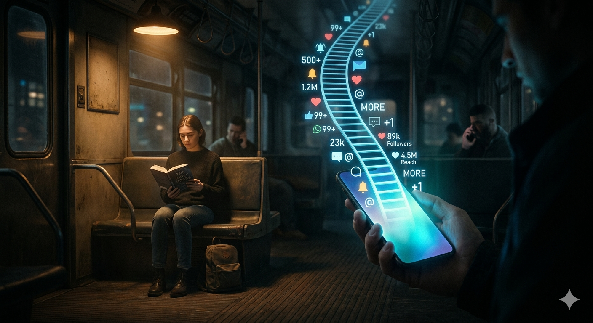

The Arithmetic of More
The phone is already warm by the time I pick it up again.
Not hot — just holding the residual heat of my last scroll, like a chair someone has only just left. My thumb moves before I've decided anything, a small upward flick that feels less like intention and more like reflex. Notifications bloom in the corner. A number next to a name. A number under a post. A quiet, constant arithmetic humming under everything else I'm supposedly doing.
Four new connections. Thirty-two views. Two likes that arrived sometime while I wasn't looking.
There's a particular flatness to numbers moving in the right direction .. not excitement, more like watching an elevator climb. You don't cheer each floor. You'd only notice if it stalled.

Or maybe it started earlier than that.
At a kitchen table, years ago, a friend explained why he worked weekends. "Overtime," he said, tapping his mug against the table like punctuation. "More hours, more money. Simple math." He said it the way people say things that have never once been questioned in their presence .. a closed system, complete in itself. His wife, at the counter with her back to us, didn't turn around. "More hours," she said, "less you here." Nobody argued. The coffee cooled. The math stayed intact, just quietly rearranged by someone standing six feet away from it.
I didn't understand, then, that I was watching two definitions of the same word fail to negotiate.
⸻
On my screen, more behaves better. It doesn't talk back.
More connections implies more opportunity, though the interface never explains how .. it just assumes the logic is shared, the way a card trick assumes you won't ask to see the deck. The number climbs, and with it comes a faint, specific sense that something is accumulating. Not contacts exactly. Possibility, maybe, in its more abstract and uncountable form, somehow being counted anyway.
A friend treats this like a scoreboard. He checks his metrics the way other people check the weather .. habitually, with a kind of weather-checker's neutrality, except his weather is always described as working. Another friend deleted the app outright. Said it made her feel like she was performing productivity for an audience that didn't exist yet. Now she walks in the mornings without headphones, which sounds suspiciously like the opposite of optimizing anything, and she says it like a confession rather than an achievement.
Both of them seem certain .. They're just certain in opposite directions, which is its own kind of evidence that the certainty isn't really about the app.
⸻
There's a man I see sometimes on the train .. same car, same spot near the door, standing even when seats are open. He reads actual pages, not a screen, and he reads slowly, the way you'd walk somewhere you weren't in a hurry to leave. One morning the train stalled between stations. The lights flickered, settled. A dozen hands reached for phones in that same synchronized motion .. check, refresh, confirm the world is still updating on schedule.
He didn't look up.
For a moment the car seemed to split into two kinds of time: the kind that needs filling, and the kind that doesn't register the gap as a gap at all. I caught myself wondering, not for the first time, whether he was falling behind on something, or simply hadn't agreed to the premise that there was anything to fall behind on.
⸻
I open my linkedin profile sometimes just to look at the total. It's a clean, rounded number, higher than it used to be. I try to remember the exact point it crossed into something that felt respectable, but the threshold keeps sliding .. every time the number rises, the baseline quietly recalibrates itself to match, so the feeling of having arrived never actually arrives.
It isn't that I think, this is success now. It's closer to: this is not-not success. Which is a strange, slippery category to build any real momentum on, and yet most of the architecture I live inside seems to run on exactly that category.
⸻
I'm the one asking now, and the questions repeat with small variations: Are you eating. Are you sleeping. Do you have people. There's a stubbornness to my metrics .. you can't optimize "enough sleep" into something impressive, there's no visible counter for "people you can rely on," no way to make it legible to anyone standing outside the conversation. My son answers like the questions are a formality to clear before the call can move on to something else. Yeah, fine, delivered in the same flat register you'd use to confirm a wifi password. I used to take that flatness personally, like the question had landed wrong. Lately I think it just means they've never had to count any of it .. which might be the actual answer, wearing indifference as a disguise.
I tried once to translate anyway. "I'm doing well," I said, and mentioned a number .. followers, or something adjacent to followers .. and it sounded thin even as I said it, like handing someone a receipt as proof a meal had happened. They didn't dismiss it. Just nodded the way you do when someone answers a question slightly to the left of the one you asked, and let it pass without correction, which might have been its own kind of mercy.
⸻
Late one night I almost post something. Nothing significant .. a sentence vaguely shaped enough to survive in public. My finger hovers. I can already feel the calculation running underneath: timing, phrasing, the invisible rules that might tilt things toward more.
And then there's a second hesitation, underneath the first one, that isn't about performance at all. It's about permanence .. the fact that once it's out there, it joins the tally, becomes one more unit inside a system I participate in without ever having read the terms. I don't actually know what I'm counting toward, I think, and the thought arrives without alarm, almost companionably, like something I've always half-known and never said out loud.
I lock the phone instead. The silence after isn't relief. It's just unmeasured .. which, it occurs to me, might be the first time in days I've encountered something that wasn't waiting to be tallied.
⸻
Later, I open the app again. The numbers have shifted, as they always do .. small increases, small confirmations that the machine is still running on schedule. I scroll past them faster this time, not because they matter less, but because I'm less sure what they were ever pointing to.
It occurs to me, without much ceremony, that more might always have been a placeholder .. a stand-in for something harder to name and easier to count, the way a thermometer stands in for the actual experience of being cold. And maybe it persuades not because it's objective, but because it's familiar, learned early enough that I've forgotten it was ever taught at all .. the way you forget your first language was acquired rather than simply known.
My thumb pauses mid-scroll. For a second I try to picture what it would feel like to stop translating everything into increments, to let a few things stay uncounted on purpose. The thought doesn't resolve into a plan. It just sits there, briefly, weightless and a little unfamiliar, before the next motion of my hand carries me forward into the feed again, counting without quite meaning to .. the arthimetic